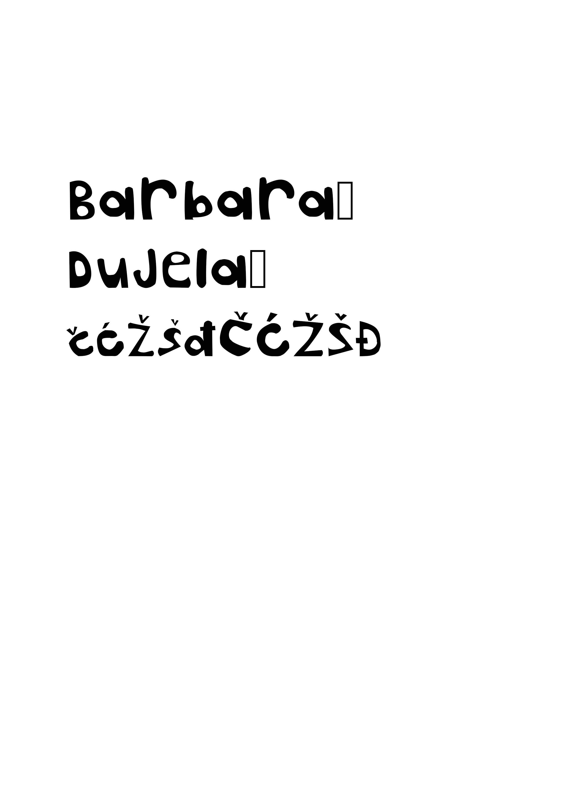

Ovdje ću Vam pokazati sve vježbe koje smo prije radili.

U prvoj vježbi smo pomoću FontForger stvorili svoj font i instalirali ga na računalo da ga možemo koristiti u programima poput illustrator-a.
U drugoj vježbi smo u illustrator-u koristili masku da izrežemo elemente, u oblik naših inicijala.
U trećoj vježbi smo stvorili svoju paletu boja koju smo koristili da bi obojali crtež koji smo napravili sa Pen Tool-om.
U četvrtoj vježbi smo napravili vinsku čašu i bocu na koju smo aplicirali gradient. Kako bi učinili da elementi više izgledaju trodimenzijalno smo koristili mesh.
U petoj vježbi smo se upoznali sa Photoshop-om. Naučili smo kako popraviti mane na slikama i općenito korekcije boje, kože.
U šestoj vježbi smo naučili tehnike digitalnog koloriranja crno bijelih fotografija. Spremanje selekcija za kasniju upotrebu.
U sedmoj vježbi smo koristili do sad naučene tehnike i selektirali i rezali djelove iz različith slika i ukomponirali ih u jednu realistično.
U desetoj vježbi smo napravili vlastitu stranicu pomoću html-a i css-a.